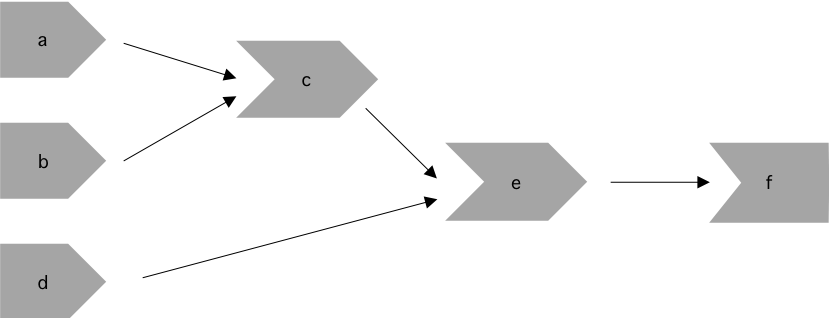
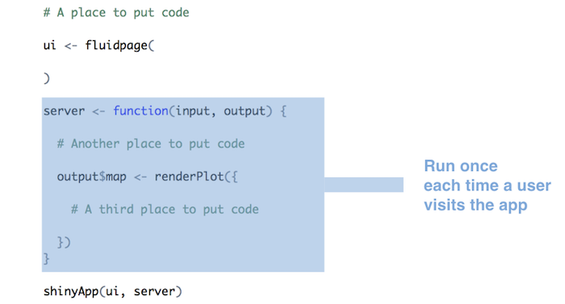

library(shiny)
# front end interface (Html)
ui <- fluidPage()
# back end logic
server <- function(input, output, session) {}
shinyApp(ui, server)- 1
- User interface
- 2
- Server
Sources: Wickham (2021, Ch. 3)
library(shiny)
# front end interface (Html)
ui <- fluidPage()
# back end logic
server <- function(input, output, session) {}
shinyApp(ui, server)ui simple because every user gets same htmlserver more complicated because every user needs independent version of the app
server() is invoked each time new session starts
input, output, session) that are created by Shiny (not by us!) when session starts connecting to specific sessioninput: a list-like object that contains all the input data sent from the browser, named according to the input ID
numericInput("count", label = "Number of values", value = 100) generates input$countinput can only be read from within reactive contexts created by a reactive functions like renderText() or reactive()
output: a list-like object containing outputs named according to output ID
output list used for sending output instead of receiving input through input list (always in concert with render function as below)renderText() set up special reactive context that automatically tracks what inputs the output uses AND converts output of R code into HTML suitable for display on a web page
server, wrap generated outputs and correspond to the type or reactive output
output$... listrenderImage({...})renderPlot({...})renderPlotly({...}) (!)renderPrint({...})renderTable({...}) (!)renderDataTable({...})renderText({...})renderUI({...})renderLeaflet({...})(!)renderImage({...}) creates images (saved as a link to a source file)renderPlot({...}) creates plotsrenderPlotly({...}) creates interactive plotly graphrenderPrint({...}) creates any printed outputrenderTable({...}) creates data frame, matrix, other table like structures
renderDataTable({...}) creates interactive datatablerenderText({...}) creates character stringsrenderUI({...}) creates a Shiny tag object or HTMLrenderLeaflet({...}) create a leaflet maprenderText() action every time we update input$name (automatically!)output$greeting will need to be recomputed whenever input$name is changedgreeting has a reactive dependency on namestring (inspect shape!) with code shown below
string is created with reactive() function to app in Section 5.1.ui <- fluidPage(
textInput("name", "What's your name?"),
textOutput("greeting"),
textOutput("greeting2")
)
server <- function(input, output, session) {
string <- reactive(paste0("Hello ", input$name, "!"))
output$greeting <- renderText(string())
output$greeting2 <- renderText(string())
}
shinyApp(ui, server)server1, server2 and server3 below?# UI
ui <- fluidPage(
textInput("name", "What's your name?"),
textOutput("greeting")
)
# SERVERS
server1 <- function(input, output, server) {
input$greeting <- renderText(paste0("Hello ", name))
}
server2 <- function(input, output, server) {
greeting <- paste0("Hello ", input$name)
output$greeting <- renderText(greeting)
}
server3 <- function(input, output, server) {
output$greting <- paste0("Hello", input$name)
}name instead of input$name.greeting intead to greeting() within renderText().output greting instead of greeting. Hence, it can not be found by the textOutput() function.server2 and server3!)Start by deciding how many and which inputs (1), reactives (2) and ouputs (3) there are. Then start drawing with inputs represented in the first column on the left. You could use, e.g., name> for inputs, >name> for reactives and >name for outputs and arrows to connect them.
server1 <- function(input, output, session) {
c <- reactive(input$a + input$b)
e <- reactive(c() + input$d)
output$f <- renderText(e())
}
server2 <- function(input, output, session) {
x <- reactive(input$x1 + input$x2 + input$x3)
y <- reactive(input$y1 + input$y2)
output$z <- renderText(x() / y())
}
server3 <- function(input, output, session) {
d <- reactive(c() ^ input$d)
a <- reactive(input$a * 10)
c <- reactive(b() / input$c)
b <- reactive(a() + input$b)
}server1, server2 and server3 below?server1: Forgot input$server2: input$name outside of renderText() functionserver3: Typo in output$gretingTo create the reactive graph we need to consider the inputs, reactive expressions, and outputs of the app.
For server1 we have the following objects:
input$a, input$b, and input$dc() and e()output$fInputs input$a and input$b are used to create c(), which is combined with input$d to create e(). The output depends only on e().

For server2 we have the following objects:
input$y1, input$y2, input$x1, input$x2, input$x3y() and x()output$zInputs input$y1 and input$y2 are needed to create the reactive y(). In addition, inputs input$x1, input$x2, and input$x3 are required to create the reactive x(). The output depends on both x() and y().

For server3 we have the following objects:
input$a, input$b, input$c, input$da(), b(), c(), d()As we can see below, a() relies on input$a, b() relies on both a() and input$b, and c() relies on both b() and input$c. The final output depends on both c() and input$d.

reactive() and other functionsreactive(), observe(), bindevent() etc.reactive() (more later!)reactive(): wraps a normal expression to create a reactive expression
string changes whenever dependency input$name changes.reactive()) are important because…

library(tidyverse)
library(shiny)
library(plotly)
library(leaflet)
library(haven)
ess <- readRDS("ess_trust.rds")
ess_geo <- readRDS("ess_trust_geo.rds")
# UI ----
ui <- fluidPage(
titlePanel("European Social Survey - round 10"),
## Sidebar ----
sidebarLayout(
sidebarPanel(
### select dependent variable
selectInput(
"xvar",
label = "Select a dependent variable",
choices = c(
"Trust in country's parliament" = "trust_parliament",
"Trust in the legal system" = "trust_legal",
"Trust in the police" = "trust_police",
"Trust in politicians" = "trust_politicians",
"Trust in political parties" = "trust_parties",
"Trust in the European Parliament" = "trust_eu",
"Trust in the United Nations" = "trust_un"
)
),
### select a variable ----
selectInput(
"yvar",
label = "Select an independent variable",
choices = c(
"Placement on the left-right scale" = "left_right",
"Age" = "age",
"Feeling about household's income" = "income_feeling",
"How often do you use the internet?" = "internet_use",
"How happy are you?" = "happiness"
)
),
### select a country ----
selectizeInput(
"countries",
label = "Filter by country",
choices = unique(ess$country),
selected = "FR",
multiple = TRUE
),
### filter values ----
sliderInput(
"range",
label = "Set a value range (dependent variable)",
min = min(ess$trust_parliament, na.rm = TRUE),
max = max(ess$trust_parliament, na.rm = TRUE),
value = range(ess$trust_parliament, na.rm = TRUE),
step = 1
)
),
## Main panel ----
mainPanel(
tabsetPanel(
type = "tabs",
### Table tab ----
tabPanel(
title = "Table",
div(
style = "height: 600px; overflow-y: auto;",
tableOutput("table")
)
)
)
)
)
)
# Server ----
server <- function(input, output, session) {
# update slider ----
observe({
var <- na.omit(ess[[input$xvar]])
is_ordered <- is.ordered(var)
var <- as.numeric(var)
updateSliderInput(
inputId = "range",
min = min(var),
max = max(var),
value = range(var),
step = if (is_ordered) 1
)
}) %>%
bindEvent(input$xvar)
# filter data ----
filtered <- reactive({
req(input$countries, cancelOutput = TRUE)
xvar <- input$xvar
yvar <- input$yvar
range <- input$range
# select country
ess <- ess[ess$country %in% input$countries, ]
# select variable
ess <- ess[c("idno", "country", xvar, yvar)]
# apply range
ess <- ess[ess[[xvar]] > range[1] & ess[[xvar]] < range[2], ]
ess
})
# render table ----
output$table <- renderTable({
filtered()
}, height = 400)
}
shinyApp(ui = ui, server = server)renderDataTable() and dataTableOutput() to create an interactive table for the data. Please try to replace the corresponding code lines in our so that we get an interactive table out of the box (Tipp: Since renderDataTable() does not like labelled datasets we have to zap them as follows: filtered() %>% zap_labels()).library(tidyverse)
library(shiny)
library(plotly)
library(leaflet)
library(haven)
ess <- readRDS("ess_trust.rds")
# UI ----
ui <- fluidPage(
titlePanel("European Social Survey - round 10"),
## Sidebar ----
sidebarLayout(
sidebarPanel(
### select dependent variable
selectInput(
"xvar",
label = "Select a dependent variable",
choices = c(
"Trust in country's parliament" = "trust_parliament",
"Trust in the legal system" = "trust_legal",
"Trust in the police" = "trust_police",
"Trust in politicians" = "trust_politicians",
"Trust in political parties" = "trust_parties",
"Trust in the European Parliament" = "trust_eu",
"Trust in the United Nations" = "trust_un"
)
),
### select a variable ----
selectInput(
"yvar",
label = "Select an independent variable",
choices = c(
"Placement on the left-right scale" = "left_right",
"Age" = "age",
"Feeling about household's income" = "income_feeling",
"How often do you use the internet?" = "internet_use",
"How happy are you?" = "happiness"
)
),
### select a country ----
selectizeInput(
"countries",
label = "Filter by country",
choices = unique(ess$country),
selected = "FR",
multiple = TRUE
),
### filter values ----
sliderInput(
"range",
label = "Set a value range (dependent variable)",
min = min(ess$trust_parliament, na.rm = TRUE),
max = max(ess$trust_parliament, na.rm = TRUE),
value = range(ess$trust_parliament, na.rm = TRUE),
step = 1
)
),
## Main panel ----
mainPanel(
tabsetPanel(
type = "tabs",
### Table tab ----
tabPanel(
title = "Table",
div(
style = "height: 600px; overflow-y: auto;",
dataTableOutput("table")
)
)
)
)
)
)
# Server ----
server <- function(input, output, session) {
# update slider ----
observe({
var <- na.omit(ess[[input$xvar]])
is_ordered <- is.ordered(var)
var <- as.numeric(var)
updateSliderInput(
inputId = "range",
min = min(var),
max = max(var),
value = range(var),
step = if (is_ordered) 1
)
}) %>%
bindEvent(input$xvar)
# filter data ----
filtered <- reactive({
req(input$countries, cancelOutput = TRUE)
xvar <- input$xvar
yvar <- input$yvar
range <- input$range
# select country
ess <- ess[ess$country %in% input$countries, ]
# select variable
ess <- ess[c("idno", "country", xvar, yvar)]
# apply range
ess <- ess[ess[[xvar]] > range[1] & ess[[xvar]] < range[2], ]
ess
})
# render table ----
output$table <- renderDataTable(filtered() %>% zap_labels(),
options = list(pageLength = 5,
searching = FALSE,
paging = FALSE,
ordering = FALSE,
filtering = FALSE))
}
shinyApp(ui = ui, server = server)When is code in a shiny app run? (Source)
Code outside of ui and server is run once, when the app is launched.


input$...) that ouput$... depends on
server <- function(input, output, session) {} is run once, when you launch your appserver <- function(input, output, session) {} is run once each time a user visits your apprender* functions is rerun constantly (not only when user changes widget value ( see reactivity)server function (at the beginning)
www/ folder in your app directoryread.table("www/swiss.csv", sep=",")read* function (e.g. read.table())render* function
render* chunk each time a user changes a widget mentioned in the chunkTo build reactive shiny apps…
*Output functions to place reactive objects in the UI (webpage)render* functions to let R build output objects (on the server)
server <- function(input, output, session) {...}){} in render* functionsrender* are saved in the output list, with one entry for each reactive object in your appinput values in a render* expressionreactlog can be used to visualize and explore the reactivity of a Shiny app# Restart R to delete log
.rs.restartR()
library(shiny)
library(reactlog)
# tell shiny to log all reactivity
reactlog_enable()
# reactlog_disable()
# run a shiny app
runApp("C:/Users/Paul/Google Drive/13_SHINY_Workshop/shinyapps/example/app_table_tab.R")
# once app has closed, display reactlog from shiny
shiny::reactlogShow()